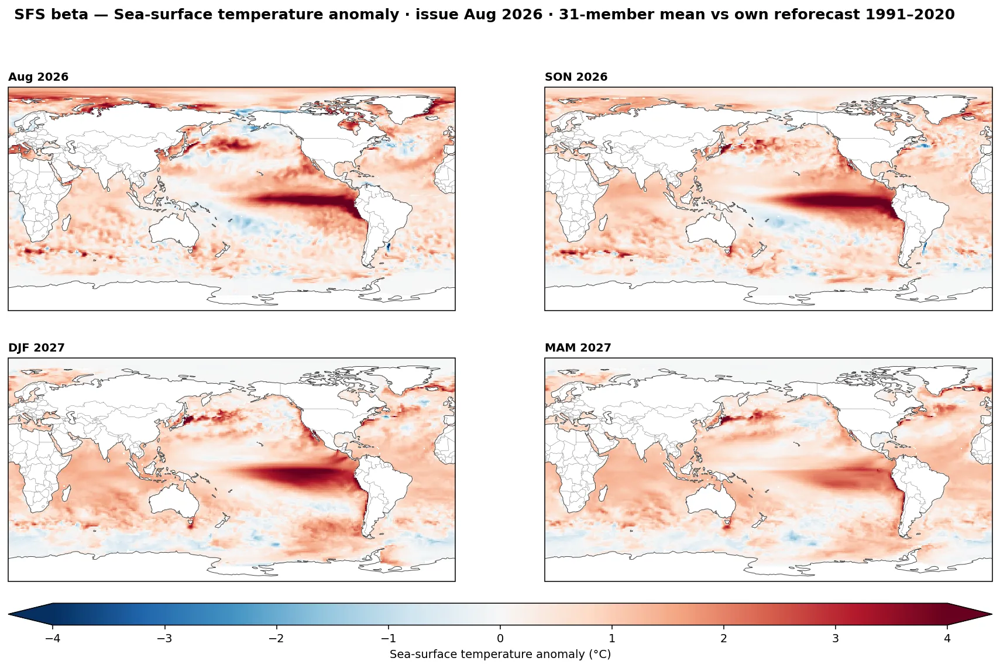
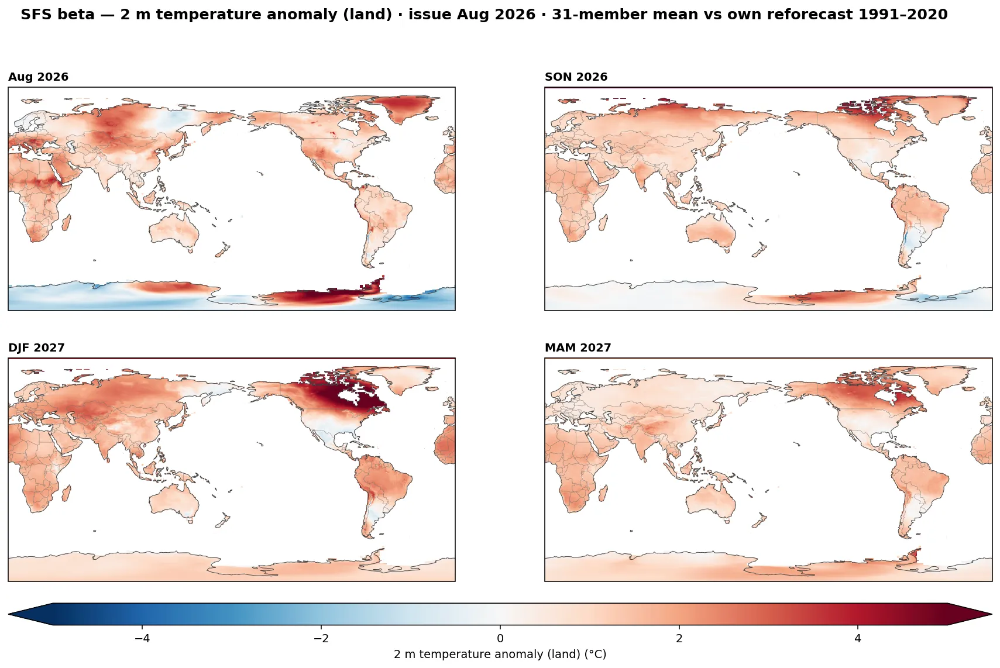
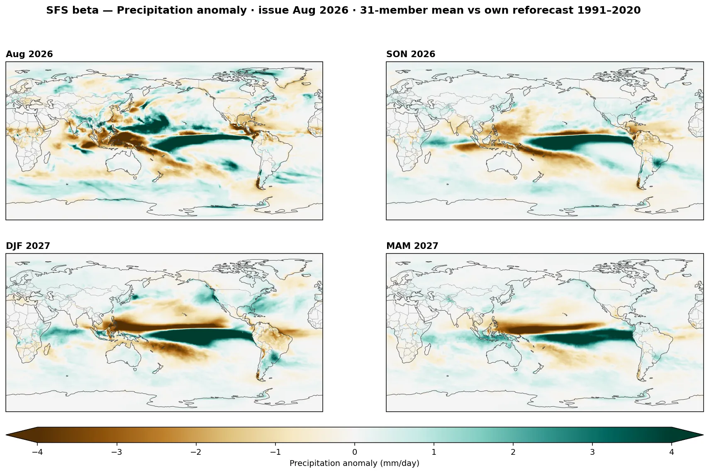
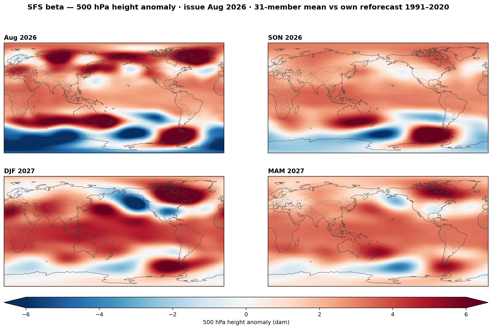
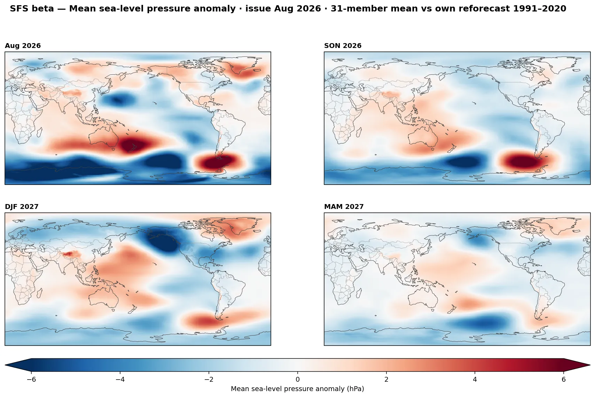
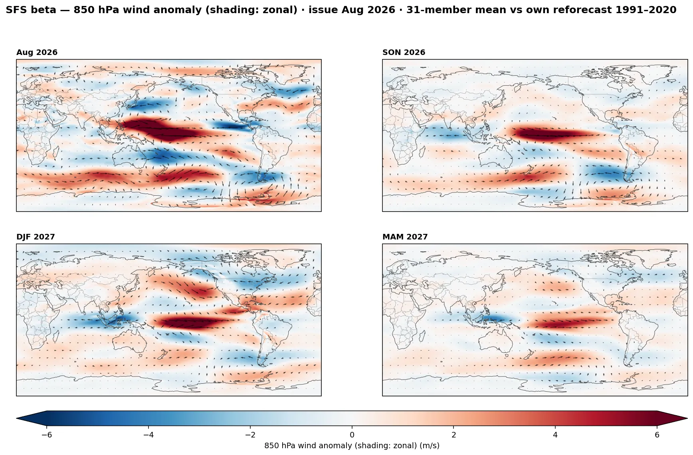
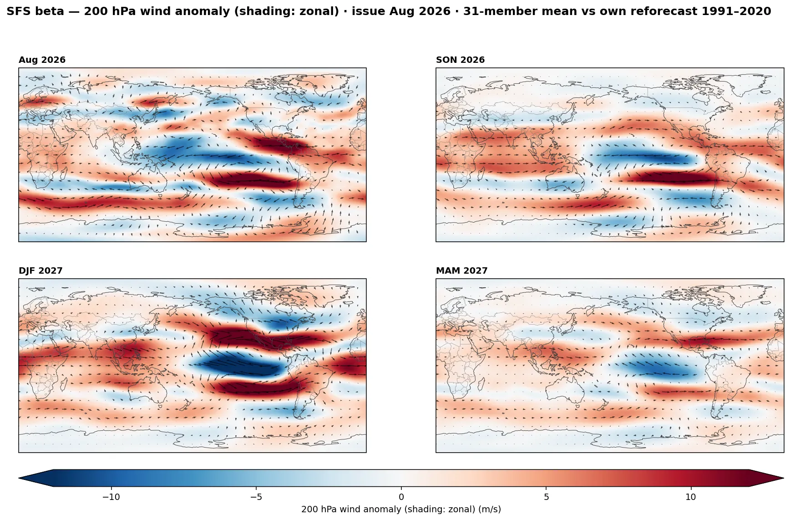

SFS Beta Seasonal Outlook
NOAA's next-generation Seasonal Forecast System — the UFS-based successor to CFSv2, running in near-real-time beta since March 2026 with open zarr output. Every month: 31 members, 12 monthly leads. Anomalies are computed against the model's own 1991–2020 reforecast for the same init month and lead (11 members × 30 years), so drift and bias are removed the same way the C3S models are handled on the ENSO forecasts page.
Niño-3.4 — all 31 members
Shaded fan: member percentile spread (10–90% and 25–75%). Bold white line: ensemble mean. The observed index leads in from the left (ERSSTv5, 1991–2020 base), and the gold dashes overlay the C3S seven-model multi-model mean from the same issue month for comparison — two independent forecast systems on one chart. Monthly values, anchored at the last observed month; toggle 3-month for the ONI convention.
Derived climate indices — member spread
Beyond ENSO: box and pattern indices computed per member from the same anomaly fields. IOD (Saji DMI), the South Atlantic Subtropical Dipole (Morioka convention, SW − NE), the Niño flavors, and a PDO built honestly for a forecast system: North Pacific SST anomalies (global-mean removed) projected onto the model's own reforecast EOF1 and normalized by the reforecast PC spread, in σ units. Fan: member 10–90% and 25–75%; line: ensemble mean.
Subseasonal degree days — Lower-48, all 31 members
Population-weighted (50 largest metros, base 65 °F) degree days over the subseasonal window — days 16–46, in the beta's 48-hour output steps, every member drawn. Weeks 1–2 are left to medium-range NWP; this is the range only a seasonal system covers with members. The grey band is the model's own hindcast climatology for the same init month and lead day (30 years × 11 members = 330 samples per day) — so a member outside the band is genuinely unusual, not just drifted. Cumulative departure runs the running total of each member minus the hindcast mean: the number a heating/cooling season actually settles on.
Subseasonal teleconnections — regime probabilities vs hindcast
AO, NAO, PNA and EPO computed per member across the day-16–46 window (48-hour steps) and standardized against the model's own reforecast for that exact lead day — values are in hindcast-σ units, so the climatological base rate of any threshold is fixed and the member fraction is directly comparable to it. The strip shows the ensemble-mean state of all four indices at a glance (red positive, blue negative); hover for member probabilities. Click a pill for the full member fan. AO uses EOF1 of the model's own reforecast 1000-hPa heights (20–90°N); NAO is the Azores−Iceland MSLP dipole; PNA the Wallace–Gutzler centers; EPO the mid-Pacific/Alaska 500-hPa dipole.
Anomaly & spread maps — step through the subseasonal window
For each valid step (days 16–46): left, the 31-member mean anomaly in signal-σ units — standardized against the typical variability of the model's own hindcast ensemble means at that exact lead day (member noise removed via the law of total variance), 20–90°N. On this scale ±1 is a normal-strength signal for this range and ±2–3 is exceptional; a reforecast-year self-test standardizes to σ≈1. Right, the member spread divided by the hindcast spread: below 1 (orange) the ensemble is more confident than climatology, above 1 (purple) less. Scrub through the window to watch where the signal holds and where it dissolves.
500 hPa height
2 m temperature
Stratosphere — wave flux and the polar vortex, all members
Two classic lower-stratosphere diagnostics from the daily members: the 100-hPa eddy heat flux (45–75°N zonal mean — proportional to the wave activity propagating up into the stratosphere) and the 50-hPa zonal-mean wind at 60°N (the strength of the polar-night jet; sustained easterlies in winter mark a major warming). Every member against the model's own hindcast climatology for the same init month and lead day. Shown for the day-16–46 subseasonal window (48-hour steps). These panels come alive in the cold season, when pulses of wave flux and vortex swings set up weeks-ahead pattern changes.
Global anomaly maps — month 1 and the next three seasons
Each figure: the init month itself, then the three rolling 3-month seasons (leads 1–3, 4–6, 7–9). All panels are the 31-member ensemble mean minus the model's own 1991–2020 reforecast climatology for the same init month and lead — the same convention as the plume above, so drift never masquerades as signal. Wind maps shade the zonal anomaly with vector arrows on top.







Monthly breakdown — step through every lead
The same anomalies without seasonal averaging: one frame per forecast month, in the loop player — scrub or step to watch the pattern develop and decay month by month. Fixed color scale across all leads.
Looking for SFS model plots? This page is an independent visualization suite for NOAA's new SFS (Seasonal Forecast System) — the UFS-based replacement for CFSv2, running in near-real-time beta since March 2026. NOAA publishes the raw ensemble output openly but (as of now) few graphical products; everything here — the Niño-3.4/RONI plumes, global anomaly maps, monthly map loops, subseasonal AO/NAO/PNA/EPO teleconnection forecasts, Lower-48 heating and cooling degree days, IOD/SASD/PDO indices and the stratospheric panels — is computed directly from the full 31-member zarr output and refreshed with each monthly issue.
About the system. SFS beta is a NOAA research prototype (published by the
6th of each month), not yet an operational product — ensemble size, physics and
post-processing are still evolving, and months may occasionally be late or revised.
The reforecast climatology here uses 11 members per year over 1991–2020,
init-month specific, so lead-dependent drift cancels by construction. Data: NOAA Open
Data Dissemination, noaa-oar-sfsdev-pds on AWS.